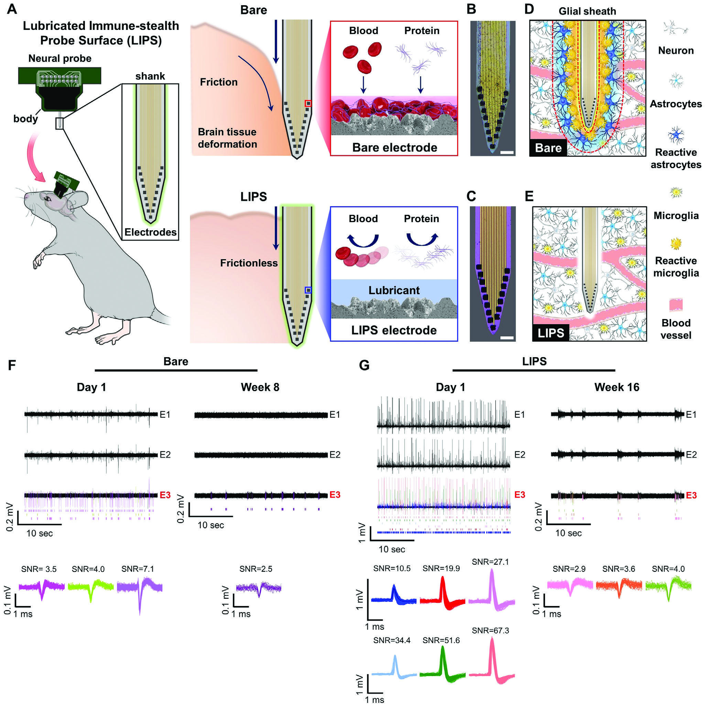

이 연구가 다루는 문제
신경 탐침의 윤활 코팅과 전극 설계를 결합해 삽입 마찰과 전기적 접촉을 함께 다룬 연구입니다. 삽입 손상과 주변 면역 반응을 살피고, 생쥐에서 신경신호를 반복 측정했습니다.
신경 기록에 영향을 주는 삽입과 부착
신경 탐침은 삽입할 때 조직을 손상시키고, 이후에는 단백질과 세포의 부착으로 기록이 영향을 받을 수 있습니다. LIPS는 윤활 계면으로 마찰과 부착을 줄이려는 설계입니다. 연구는 삽입, 오염, 신경 기록을 연결해 평가합니다.
윤활과 전기 접촉의 균형
윤활층은 마찰을 줄이는 동시에 전극 임피던스를 높일 수 있습니다. 이를 완화하기 위해 Pt black으로 전극 표면적을 늘립니다. 따라서 기록 성능은 윤활 코팅의 생물학적 효과와 전극의 전기적 설계를 함께 고려해야 합니다.

LIPS 코팅 탐침의 마찰·오염 완화 개념과 대조 탐침의 대표 신경 신호 기록입니다.
Yeontaek Lee, Hyogeun Shin, Dongwon Lee 외. “A Lubricated Nonimmunogenic Neural Probe for Acute Insertion Trauma Minimization and Long‐Term Signal Recording”. Figure 1. DOI: 10.1002/advs.202100231. CC BY 4.0. 그림의 크기·패널·레이블은 변경하지 않았습니다.
마취 생쥐의 기록과 조직 평가
장기 비교는 마취한 생쥐의 주간 기록과 조직 면역염색을 사용했습니다. 마취는 움직임 잡음을 줄이는 조건이며, Methods는 신호 분류와 검출 종료 기준을 제시합니다. 분리된 신경 신호 수, 동물 수, 면역염색 표본 수는 서로 다른 단위입니다.
신호 유지와 면역 표지의 변화
코팅 탐침은 비교군보다 오래 신호가 관찰됐고 주변 면역 표지의 발현도 낮았습니다. 두 관찰은 표면 설계의 해석을 뒷받침하지만, 접촉 임피던스와 분석 조건도 기록에 영향을 주므로 면역 반응만을 신호 변화의 원인으로 확정할 수는 없습니다.
기록 기간을 비교할 때의 조건
코팅의 임피던스 증가, 선택적 코팅과 윤활액 유지가 남은 과제입니다. 마취, 신호 분류, 검출 종료 기준을 맞춰 기록 기간을 비교해야 합니다. 신호를 더 오래 검출했다는 결과가 모든 전극에서 같은 품질이 계속 유지됐다는 뜻은 아닙니다.
함께 읽을 연구
Foreign body reaction to biomaterials
DOI: 10.1016/j.smim.2007.11.004 ↗
관련 리뷰의 초록은 단백질 흡착에서 이물 반응까지의 과정을 정리합니다. LIPS는 표면 부착과 삽입 손상을 줄이려는 접근입니다.
일반 기전의 설명이 신경 기록의 장기 성능을 검증하는 것은 아닙니다.
초록을 참고한 소개RESEARCH NEWS
연구 소식
"인체삽입 의료기기 수명 4배 이상 늘리는 코팅기술 개발" ↗
A Lubricated Nonimmunogenic Neural Probe for Acute Insertion Trauma Minimization and Long-Term Signal Recording (Adv. Sci. 15/2021) ↗
BLISS 이연택 학생 Advanced Science에 논문 게재 & Back cover 선정 ↗
미확인 후보와 접근 제한 (2)
해설에 사용한 자료
해설 근거는 서론과 §2.1–2.3, Europe PMC의 §2.6–2.8, Figure 5 전체 설명, §3 Discussion, 실험 절의 동물 준비·수술·전기생리 기록·신호 분석·통계 분석입니다. §2.4–2.5는 추가 확인 범위에 포함되지 않았으며 보충자료 전체의 검토도 완료되지 않았습니다.